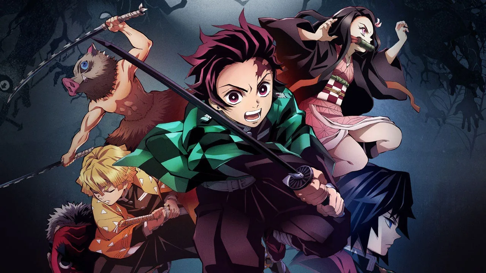

Aparição de Tomioka
Após a batalha Tanjiro pensa que Rui estava morto, mas Rui cortou sua própria cabeça para que seu pscoço não seja cortado pela lamina

Por sorte Tomioka chega a tempo para salvar Tanjiro
E Tomioka utiliza a 11º respiração da agua e acaba com Rui
